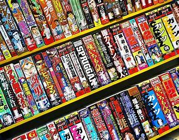

één van mijn hobbys is lezen waar van groten deels manga er zijn 2 verschillende die ik lees
-

je kunt de 2 direct van elkaar onderschijden manga is in zwart wit manhwa is in kleur nog een erg groot verschil is manga is van japanse afkomst en manhwa komt uit zuid-korea